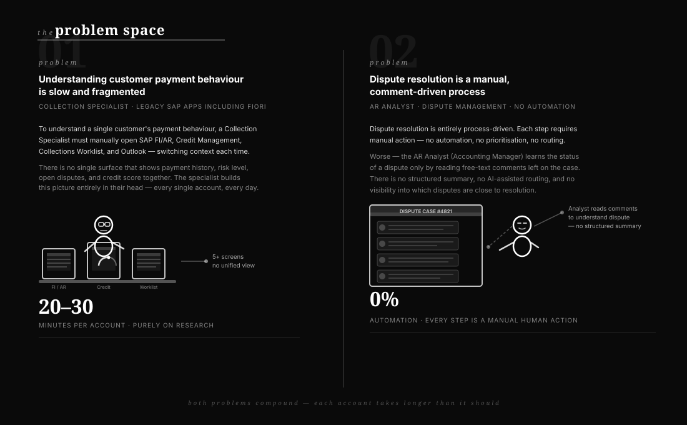
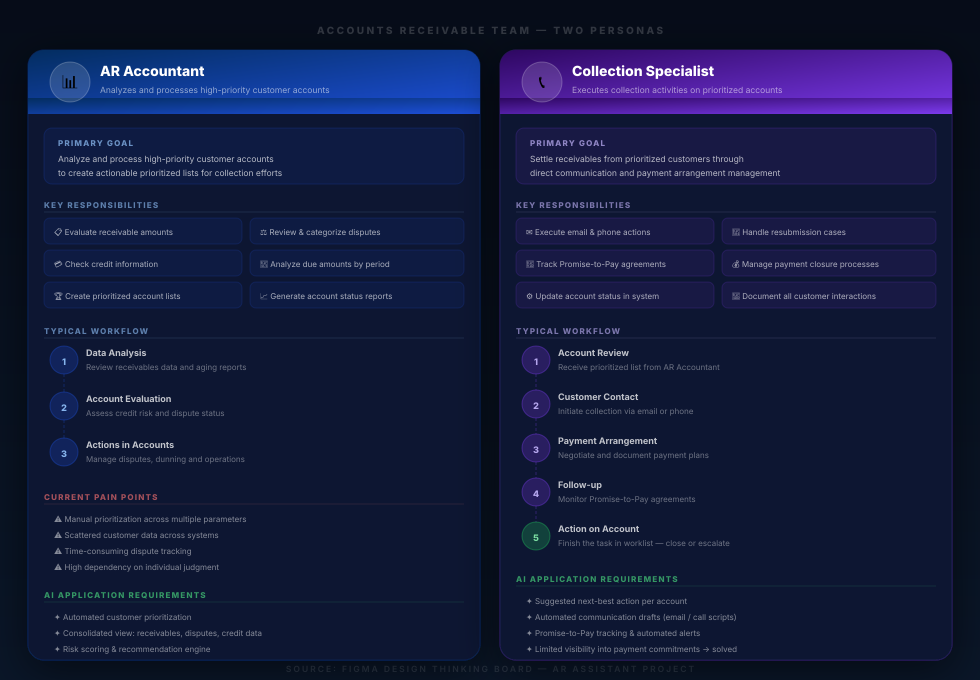
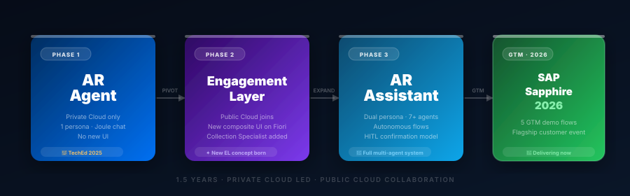
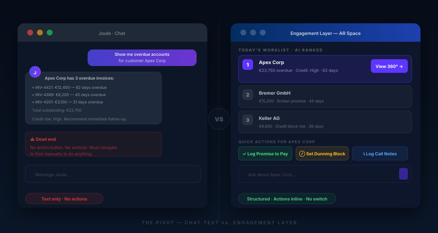
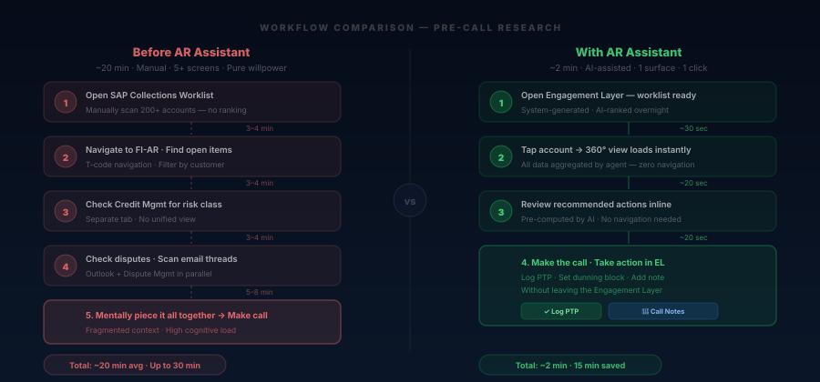
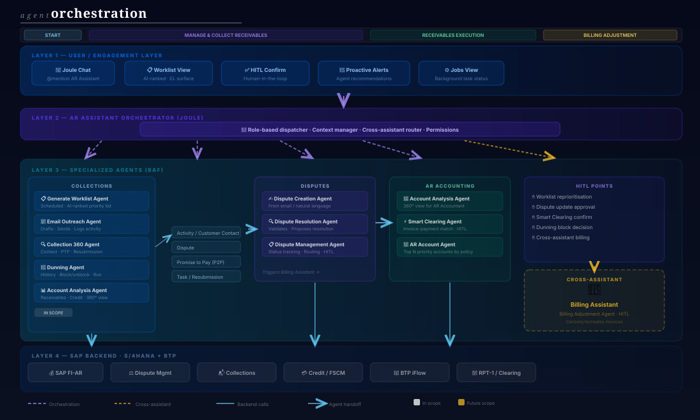
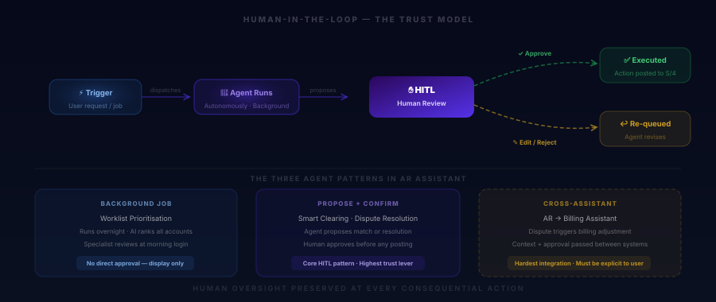
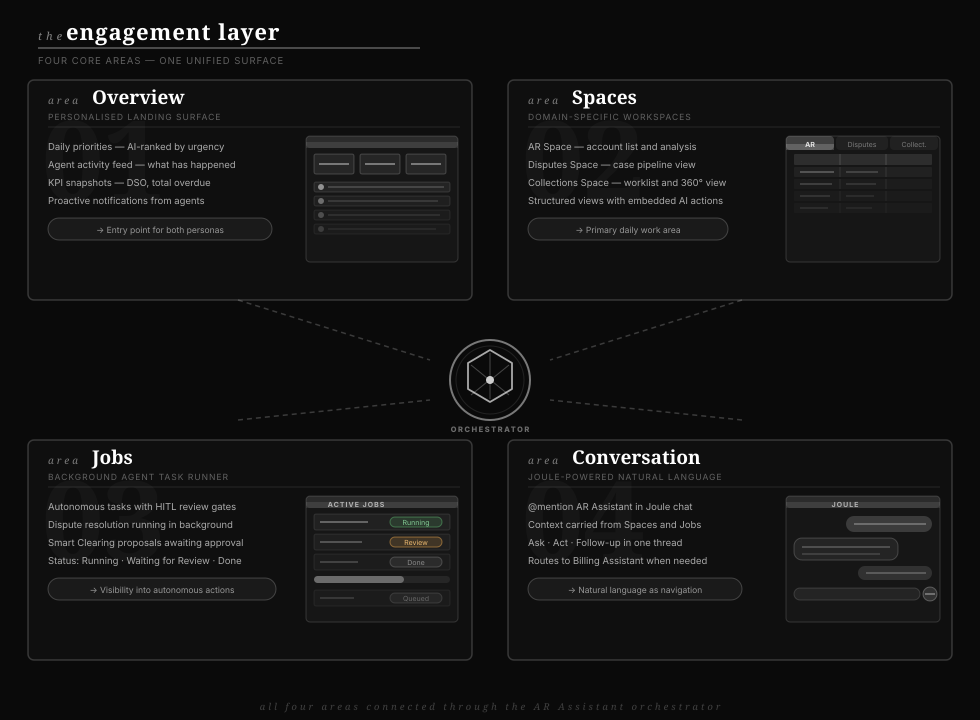
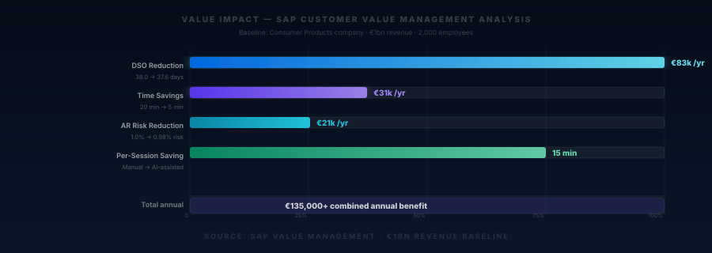

The problem wasn't missing data.
It was the wrong question.
The original ask sounded straightforward. AR teams — Accounts Receivable Accountants and Collection Specialists — spent enormous amounts of time every day moving between screens. SAP FI for open items. Credit management for risk scores. Collections management for dunning. Outlook for customer emails. Five, sometimes six, separate places to build a picture of a single customer before making a single call.
The initial instinct, as it often is in enterprise software, was to consolidate. Build a dashboard. Surface all the data in one place. Give people a single screen that shows everything at once.
That was the wrong question.
"I have 200 accounts. I don't need more data. I need to know which 10 to call today — and why."
— Collection Specialist, Customer Engagement Session
The first customer engagement sessions changed the framing. The problem wasn't that information was hard to find. It was that no system was helping specialists decide what to do next. Data was abundant. Judgment was not. The right question was not "how do we show everything?" but "how do we tell a specialist where to direct their attention?"
That distinction — between a data aggregator and an intelligent action surface — shaped every design decision that followed over the next eighteen months.
Specialists don't have an information problem. They have a prioritisation and action problem. The system should reduce the number of decisions they need to make, not increase the amount of data they need to read.

Phase 1: One agent. One persona.
One very focused delivery.
With the problem reframed, the team made an explicit decision to start small. The first version — built entirely by the Private Cloud team — would do one thing well: give an AR Accountant the ability to analyse a customer account through a Joule conversation, without leaving their current workflow.
No new UI. No composite screen. Just a conversation. You ask Joule about a customer, it surfaces overdue amounts, dunning history, dispute cases, and a recommended course of action. That was Phase 1. It shipped at SAP TechEd 2025.

The Phase 1 scope was deliberate. Worklist prioritisation. Account analysis. Dispute analysis. Everything else — dunning, credit management, clearing — was explicitly out of scope, not because it wasn't valuable, but because a focused delivery builds more trust than an ambitious one that slips.
- Prioritised daily account list, AI-ranked by financial exposure and credit risk
- 360° account view in one Joule conversation — overdue items, balance, disputes, payment history
- Dispute analysis: agent reviews cases and proposes resolutions autonomously
- Dunning and credit management: deliberately de-scoped for Phase 1
Private Cloud's volume limits meant the LLM context window couldn't hold all open items for large accounts. Smart Clearing and oversized worklists had to be architecturally re-scoped. This wasn't a UX decision — it was a platform reality that forced prioritisation cutoffs into the design from the start. Surfacing this constraint early prevented false expectations in later phases.
The TechEd delivery gave the team something more valuable than a shipped feature: it gave them real user reactions to a real thing. And those reactions were the seed of everything that came next.
"Users asked Joule great analytical questions — but when Joule answered, there was nowhere to go. No button to press. No action to take. Just text."
Observation from post-TechEd reflectionThe moment the requirement changed
Phase 1 proved the core hypothesis — an AI agent could do in seconds what took a specialist twenty minutes. But it also exposed a structural problem with the medium.
Joule's chat interface was designed for questions and answers. It was not designed to surface structured recommendations, render tables of overdue invoices, or present a worklist where you can click an account and immediately take action. The chat metaphor was the right starting point — but the wrong ending point.
This was the moment the requirement changed for the first time.
From: Joule chat assistant → To: A dedicated Engagement Layer
The team made the call to design a new kind of UI — not inside the existing Joule chat panel, but a composite surface sitting on top of SAP Fiori. The Engagement Layer. A place where AI-generated insights, agent recommendations, and action prompts could be rendered as structured, interactive UI — not just conversational text.
Users get text answers in a chat interface. To take action, they switch back to a Fiori transaction. The gap between insight and action remains.
Users get structured cards, prioritised lists, and inline action buttons in the Engagement Layer. Insight and action are in the same surface.

This decision had consequences. Designing the Engagement Layer meant designing for a platform that didn't fully exist yet. No dedicated UI kit. No established EL component library. The design had to be co-created with the platform team — which meant the AR Assistant would end up having disproportionate influence on EL design patterns across SAP.
Designing for a nascent platform is high-risk and high-reward. The AR Assistant being one of the first EL products meant it shaped the pattern library — but it also meant every design decision was made without precedent. That ambiguity became a feature, not a bug: it forced first-principles thinking rather than pattern-matching.
A second persona. A second pivot.
And a user validation session that changed the scope.
When the Public Cloud design and development team joined in Phase 2, the product scope expanded beyond the AR Accountant persona. A new persona entered the picture: the Collection Specialist.
The Collection Specialist is a fundamentally different user. Where the AR Accountant is analytical — focused on clearing, matching, and dispute resolution — the Collection Specialist is operational. Their job is customer contact. Calls. Emails. Follow-ups. Their performance is measured in cash collected, promises made, bad debt avoided.
The team assumed the Engagement Layer design from Phase 1 would transfer cleanly. It didn't.
"Most of the work load comes after the call. Notes, tickets, resubmissions — all of it is manual, all of it is fragmented."
— Collection Specialist, User Validation Session · April 2026 · SAP & DHL participantsThe validation sessions with SAP and DHL practitioners — Cash Collection Managers, Collection Specialists, Dispute Specialists, OTC Process Owners — surfaced a gap in the initial design that hadn't been anticipated. The prototype focused on pre-call research: get the account view, see the overdue items, decide whether to call.
But users were clear: the pre-call research wasn't the bottleneck. The post-call work was. Notes. Follow-up tracking. Resubmissions. Internal escalations that returned with no resolution. These weren't optional features. They were the job.
From: View-first EL design → To: Action-first EL design
Early designs surfaced data. Validation showed specialists wanted to do things, not just read things. The Engagement Layer had to lead with recommended actions — not information to process. The design principle shifted from "show everything relevant" to "surface what to do next."
EL shows account data, overdue amounts, dispute summaries. User interprets and decides what action to take independently.
EL leads with recommended actions ("Set dunning block", "Log Promise to Pay") with supporting data inline. Decision is pre-made, user confirms.

The Engagement Layer was built as a separate React tab — it doesn't natively carry context from Fiori. A user viewing a customer account in Fiori gets zero carry-over when opening EL. This was actively limiting the "seamless workflow" promise of the layer. Designing around this gap — and proposing how contextual data passing should work in a future state — became a significant part of Phase 2 design work.
Phase 3: Building the full system.
7 agents. 2 personas. One assistant.
By Phase 3, the AR Assistant had evolved into something substantially more complex than the original Joule chat concept. Not one agent but many — each specialised, each autonomous, each connected to the others through an orchestration layer that the user never sees.
The design challenge shifted. It was no longer about designing what a user sees when they ask a question. It was about designing what a user sees when the system is doing something on their behalf — running background jobs, resolving disputes, proposing clearing matches — and they need to review, confirm, or redirect it.

Designing for a multi-agent system meant designing for two kinds of failure state: what the user sees when an agent succeeds, and what they see when it can't complete its task. Most agent UX breaks down at failure. Explicitly designing both — what the agent communicates when it succeeds, what it says and asks when it doesn't — reduced complexity for specialists and built trust faster than any onboarding ever could.

Engineering built the Joule conversation version first — a text-heavy, limited-visuals scaffold. Design ran in parallel, producing the EL target state: richer visualisations, structured cards, inline actions. Two tracks. Both valid. The dual-track approach allowed demos to happen early while the higher-fidelity experience matured in Figma.
Five flows for Sapphire.
How GTM became a design forcing function.
The Go-To-Market strategy for SAP Sapphire 2026 did something that months of internal roadmap discussions had not: it forced the team to choose.
Defining five GTM flows for the flagship customer event meant every feature that couldn't be demo-ready by the event deadline was de-scoped or deferred. Hard conversations. Clear tradeoffs. But also — unexpectedly — better design. When you know exactly what story you're telling, the design gets sharper.

Designing for a conference demo is a useful constraint. It forces you to ask: what is the single most compelling moment in this product? The answer — watching an agent autonomously resolve a dispute and trigger a billing adjustment, all in one Joule conversation — became the design North Star for Phase 3.
The numbers behind
the business case.
Good design should make business outcomes better. The AR Assistant's value case was quantified by SAP Value Management for a Consumer Products company with €1bn revenue and 2,000 employees — a representative baseline for the target customer segment.

The AR Assistant shipped at TechEd 2025.
It is delivering at Sapphire 2026.
From a single Joule chat to a fully orchestrated Engagement Layer. From one persona to two. From a Private Cloud experiment to a cross-cloud flagship GTM. The product changed three times before it was right. That is not a failure of planning. That is what good design looks like.